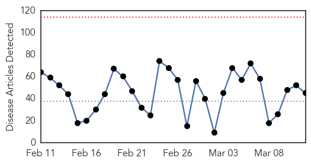
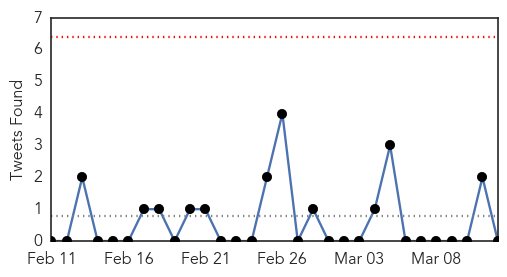
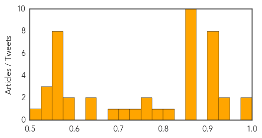

Measles
30-Day Web Trend
3 alerts, 7 warnings

30-Day Twitter Trend
0 alerts, 0 warnings
Article Locations

Article Confidences
Top Articles:
Top Tweets:
-
No tweets found for Mar 12, 2014
Unknown
30-Day Web Trend
0 alerts, 0 warnings

30-Day Twitter Trend
0 alerts, 0 warnings

Article Locations

Article Confidences
Top Articles:
- 0.982
- Health Ministry decrees end of peak flu period
- 0.977
- Cases of scarlet fever are at a 24-year high
- 0.950
- New virus threatens pigs
- 0.943
- International Medical Corps Continues to Deliver Emergency Humanitarian Aid in South Sudan Following the Recent Outbreak of Heavy Fighting in Malakal - South Sudan
- 0.917
- Chicago Tribune
- 0.917
- Chicago Tribune
- 0.917
- Chicago Tribune
- 0.917
- Chicago Tribune
- 0.917
- Chicago Tribune
- 0.917
- Chicago Tribune
- 0.917
- Chicago Tribune
- 0.913
- Stockton's University Hospital of North Tees is hit by norovirus
- 0.866
- China says can't confirm satellite images connected to missing plane
- 0.866
- Turkish protester dies from injury in Istanbul clashes -official
- 0.866
- Tanker coming from Libyan rebel port entered Egyptian waters-minister
- 0.866
- Two women dead in New York City building collapse
- 0.866
- Russia's Putin discusses Crimea with Crimean Tatar
- 0.866
- Rocket barrages from Gaza strike Israel
- 0.866
- S. Africa issues "stern warning" to Rwanda over attacks on exiled opponents
- 0.866
- A girl smiles as Muslim families, fleeing ongoing sectarian violence, prepare to be evacuated by air from consulate of Mauritania in Bangui, Central African Republic
- 0.866
- Who is supporting Syria's refugees?
- 0.866
- Former Libyan PM passes through Malta on way to Europe -Maltese PM
- 0.803
- Senate Health, Education, Labor and Pensions Subcommittee on Primary Health and Aging Hearing
- 0.788
- New contagious eye condition strikes Muscat expatriates
- 0.771
- HPV Vaccine Prevents Cervical Cancer
- 0.755
- KRNV, Reno, NV
- 0.736
- Press Statement by MDC-T Shadow Minister for Health and Child Welfare
- 0.712
- Boy Dies of Bird Flu, Another Boy in Recovery
- 0.698
- Mobile Medical Unit "Reinvents The House Call" By Using Health Technology To Improve Care, Reduce Costly Trips To The E.R. In South Metro Denver
- 0.640
- Taiwan lifts yellow travel ...｜Society｜WCT
- 0.636
- South Africa Battles Drug-Resistant TB - South Africa
- 0.592
- Dr. Tilman Richards Raises Awareness of Bleeding Gums and Other Gum Disease Symptoms in Corpus Christi, TX
- 0.584
- The hospitals harbouring killer infections
- 0.551
- Video: Russian takeover of Crimea extends to local media
- 0.551
- Shocked French surgeon finds 600g of cocaine in patient's stomach
- 0.551
- Israel hits back after rocket barrage from Gaza
- 0.551
- Israel approves army conscription for ultra-Orthodox
- 0.551
- Hollande government admits knowledge of Sarkozy phone tapping
- 0.551
- France returns paintings looted by Nazis during WWII
- 0.551
- Former French PM Villepin allegedly bagged €100,000 for ‘day’s work’
- 0.551
- Direction of missing plane unknown, Malaysian authorities admit
- 0.549
- Obama to welcome Ukrainian PM, in affront to Russia
- 0.549
- FDA shuts down Roos Foods cheese plant over listeria outbreak
- 0.544
- Motsoaledi launches free HPV vaccine for schoolgirls
- 0.517
- Senate Health, Education, Labor and Pensions Subcommittee on Primary Health and Aging Hearing
Top Tweets:
- 0.556
- Think you know the flu? Test your flu IQ: http://t.co/uBgegS4MFw flufacts